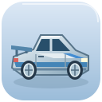

Getting your Skyline ready
Loading your car, Artin, and Leo.
SMALL DRIVER. BIG ADVENTURE.Chill Drive
Sunshine loop
0 laps 0 drifts
☆ ☆ ☆ ☆ ☆Find 5 stars on your lap
Tap GO. Follow the road through five star gates!
Follow the arrows
RACE COMPLETEYou won!
Race coins are just for fun. Real bucks come from jobs.